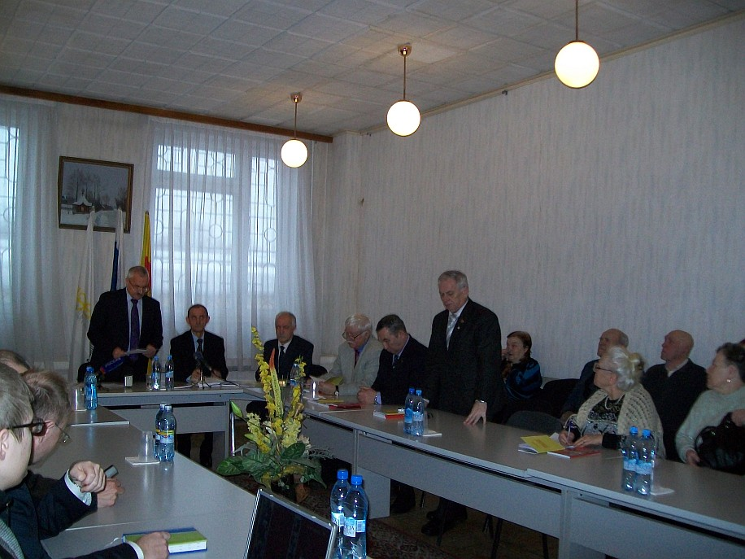
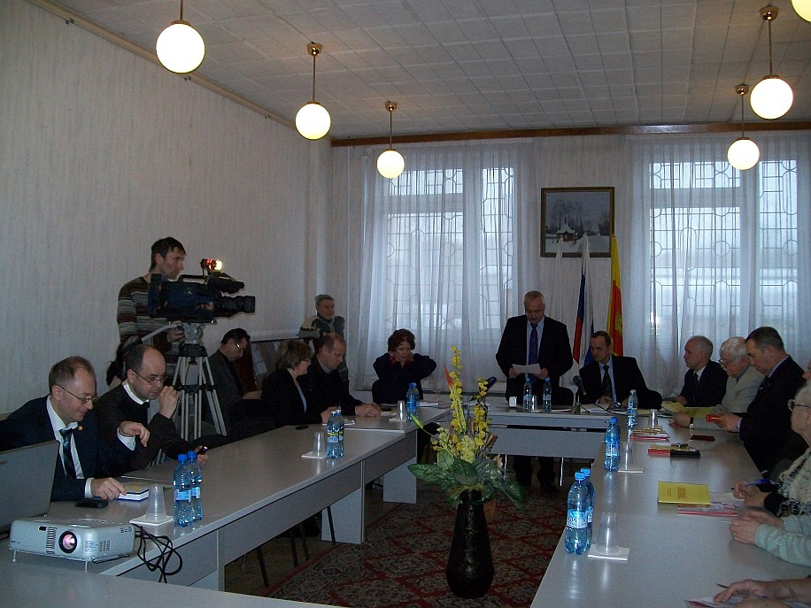
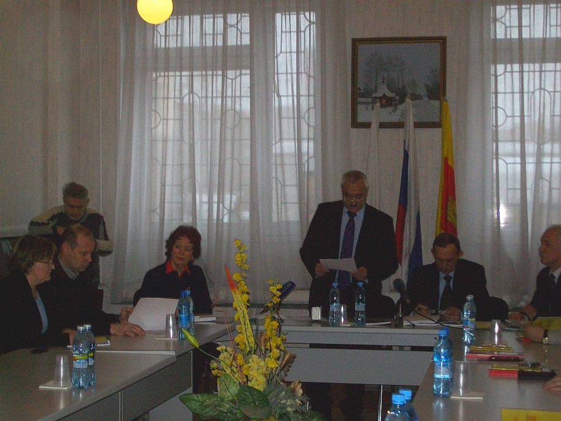

|
Фонд "Жить и помнить" презентовал 4 главу Книги памяти

7 февраля 2013 года благотворительный фонд «Жить и помнить» провел презентацию очередной, четвертой главы «Книги памяти советских солдат Великой Отечественной войны - уроженцев калининской области, считавшихся пропавшими без вести».
В только что вышедшее из типографии издание включены сведения о более чем 450 погибших военнослужащих, судьбы и места захоронения которых до сего дня не были известны.
Фонд «Жить и помнить» создан в 2006 году. Его главная задача – увековечение памяти героев, пропавших без вести в годы Великой Отечественной войны. Дело в том, что до сих пор многие солдаты Великой Отечественной войны, погибшие в фашистском плену, числятся пропавшими без вести. Неизвестны их судьбы, места захоронений. А записи о них в мартирологах обрывочны и часто содержат искаженные сведения.

Фондом подготовлена «Книга памяти». В нее вошли более 5 тысяч статей, каждая из которых посвящена судьбе отдельного человека. Статьи составлены на основании изучения документов архива Министерства обороны РФ, персональных карт военнопленных и других трофейных документов Вермахта, результатов работы поисковых отрядов.
В июне 2011 года фондом было принято решение начать поэтапную публикацию собранных материалов за счет собственных средств. Выходящая в свет «Четвертая глава Книги памяти» - результат данной работы.

В издание включена статья одного из создателей фонда «Жить и помнить» - журналиста Георгия Васильевича Харитонова (1949-2009) «Обращение к читателю нового века». Материал в полной мере отражает высокую гражданскую позицию этого неравнодушного, отдавшего много сил поиску сведений о пропавших без вести земляках человека.
Сотрудники фонда рассказали на презентации о том, как велась подготовка книги, поделились вновь полученными сведениями. На встречу с журналистами были приглашены родственники погибших, чьи имена вошли в «Книгу памяти».

Кроме того, было представлено еще одно уникальное издание «Воинские формирования Калининской области на фронтах Великой Отечественной войны», в подготовке которого также принимал участие отечественных секретарь фонда «Жить и помнить» Александр Терентьев.
Центр патриотического воспитания Тверской области
|